Krishna Madireddy
As a software engineer, architect, engineering manager, and director of software
engineering, I have a diverse background in building and leading software development
teams. With over 19 years of experience in the industry, I have a proven track record of
delivering high-quality software solutions on time and within budget.
I have a strong foundation in computer science principles and a passion for using
technology to solve business problems. I am always looking for new challenges and
opportunities to grow and learn as a software engineer, architect, and leader. I am
committed to driving innovation and delivering value to my clients and stakeholders
through the use of technology.
Education
- MSc(IS), Master of Science in Information Systems
Osmania University - BCA, Bachelor of Computer Applications
Osmania University - MBA, Master of Business Administration (IS)
Sikkim Manipal University - Data Analyst Nano degree
Udacity - FullStack developer Nano degree
Udacity - Front-End Web developer Nano degree
Udacity
Certifications
|
|
Skills
|
Lifespan
Lifespan is a digital product portfolio enabling our customers to maximize renewable
asset performance
and
operations across their fleets.
I managed agile development
teams for mobile
and web applications, incubating ideas and converting them into production ready apps,
re-architecting
and
porting existing apps to AWS, providing support and establishing the organization's
vision, ensuring
code
alignment with security standards and policies, supporting and enhancing apps in
production, mentoring
teams, planning and budgeting resources, and managing vendors. In addition, experience
with
architecture,
the full development life cycle, full stack development, and microservices architecture.
https://www.ge.com/renewableenergy/digital-solutions/lifespan/
Field Vision
FieldVision is a mobile app developed on GE's Predix platform for industrial internet of
things
(IoT)
solutions. It is designed to enable field engineers to track and perform complex tasks
more
efficiently,
saving time and money for both the company and its customers. The app also serves as a
tool for the
GE
sales team. It is the first mobile app developed on GE's Predix platform for industrial
IoT
solutions.
As a lead software engineer,
I lead a
team in
designing software and development, setting technical direction, collaborating with
stakeholders to
define
project goals, participating in the full development life cycle, mentoring and coaching
team
members,
ensuring work meets quality standards, communicating with team members and stakeholders,
assisting
with
project estimation and planning, troubleshooting technical issues, and evaluating and
adopting new
technologies.
https://www.justin-ux.com/fieldvision
DPOD
DPOD is a full reliability-centered maintenance application that improves site
operations and
profitability through consolidation of work activities, optimization of daily schedules,
maintenance
of
historical records, and automation of standardized reporting. The application simplifies
daily site
operations, reduces operating costs, and increases worker productivity. Features include
consolidated task
management, automated scheduling, integration with ESCADA and Diagnostics for automatic
unplanned
task
creation and real-time turbine status (contingent upon purchase), a simplified summary
of key data
for
daily operations, and standardized reporting and communication.
I lead a team in software
design and
development, setting technical direction, collaborating with stakeholders to define
project goals,
participating in the full development life cycle, mentoring and coaching team members,
ensuring work
meets
quality standards, communicating with team members and stakeholders, assisting with
project
estimation and
planning, troubleshooting technical issues, and evaluating and adopting new
technologies.
https://www.ge.com/digital/sites/default/files/download_assets/GE-Digital-Wind-Operations-Optimization-Brochure.pdf
Material Optimization suite
The Material Optimization Suite (MOS) app is a tool for designing industrial
applications for iOS.
It was
developed as part of a strategic partnership with Apple, with the goal of accelerating
the design
process
and creating a design system and iOS SDK for GE developers. The app is intended to
enable the
creation of
best-in-class industrial apps for iOS and to enable the development of iOS apps at
scale.
As a lead software engineer,
I lead a
team in
software design and development, setting technical direction, collaborating with
stakeholders to
define
project goals, participating in the full development life cycle, mentoring and coaching
team
members,
ensuring work meets quality standards, communicating with team members and stakeholders,
assisting
with
project estimation and planning, troubleshooting technical issues, and evaluating and
adopting new
technologies.
https://www.justin-ux.com/apple-ge-partnership-mos
Apple Online Store
The Apple Online Store is an online retail website operated by Apple Inc. It
sells a variety of Apple
products, including iPhones, iPads, Macs, Apple Watch, and other accessories. Customers
can browse
and
purchase products through the website, and can also find information about product
features and
specifications, as well as customer service and support.
Developed Java-based
applications and
services
for AOS back-end integration, SAP Core processing, payment authorization reversal,
payment
integration
with multiple banks, gift card redemption, "Buy Online Pickup in Store" feature support,
checkout
and SAP
integration for multiple countries, tracking orders placed through affiliate partners,
service
enhancements and debugging tools, unit, integration, and system testing, UI design and
payment
options
implementation for the China store, coherence integration for data management and
caching, address
field
rendering across stores, checkout implementation for multiple countries, and order
publishing to SAP
Core
using Objective-C.
https://store.apple.com
Apple mobile app
The Apple Store mobile app is a free download from the App Store. It allows users
to shop for and purchase
Apple products and accessories from their iPhone, iPad, or iPod touch. The app also
includes
features such
as the ability to view and track orders, make reservations at an Apple store, and access
the Genius
Bar
for technical support. In addition, users can find information about financing options,
trade-in
values,
and in-store pickup options. The Apple Store mobile app also offers personalized
recommendations and
the
ability to save items to a wish list for later purchase.
Integration with Endeca
Search Engine
for
search functionality, development of server-side features for Genius bar appointments,
workshops and
events, product reservations, and merchandizing and personalization via engraving &
gifting for
Apple
Store Retail, and implementation of Omniture tracking for business reporting and
analysis.
Additionally, a
Java service using Velocity was developed to merge templates with dynamic data and
render app
screens.
https://apps.apple.com/ca/app/apple-store/id375380948
My Forms
My Forms is a web application designed for educational training companies. It is similar to other form and survey creation tools such as Google Forms and Survey Monkey, but is specifically tailored for the needs of educational training companies. Users of My Forms can create and distribute forms and surveys to gather data and feedback from students, staff, and other stakeholders in the educational training industry. The app also include features such as customizable templates, data analysis tools, and collaboration tools to help users create and analyze surveys efficiently.
Printing Press Management
Printing Press Management System is a software application designed to help manage the operations of a printing press. The app includes features such as registration using an email link, password reset using email, and a variety of masters and work process features. The masters features allow users to manage user access, print job types, client addresses, material suppliers, material groups, material stock, and print cost rates. The work process features allow users to create job cards, order forms, view orders and job cards, create material indents, create new receipts, and view receipts.
 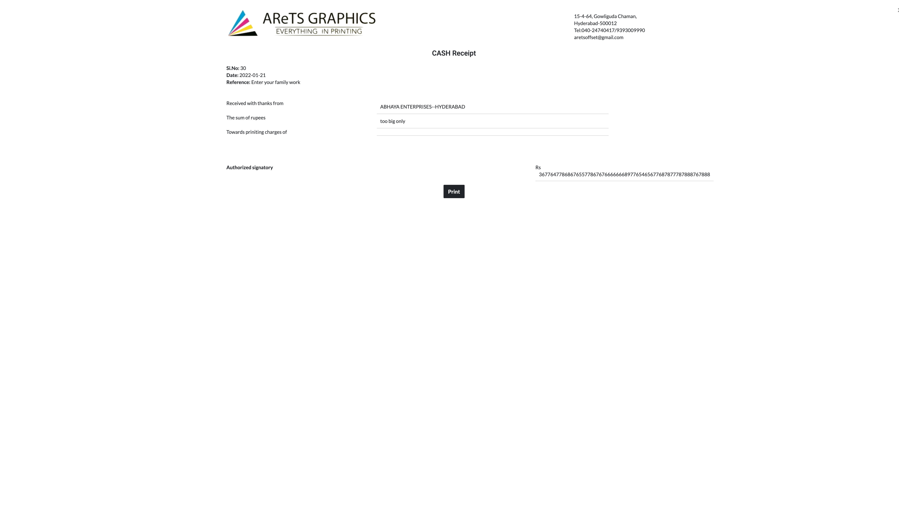
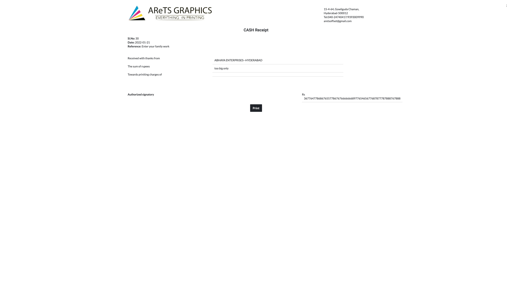


Reseller portal
The Reseller web application is a platform designed for reselling products. It includes features such as the ability to maintain a catalog of products with multiple images, show the availability of products by price, size, color, and quantity, place purchase orders through email integration, and manage inventory. The app also includes a login system with user IDs and passwords, with the ability for users to reset their passwords if needed. Access to the app will be restricted to selective, qualified resellers and user IDs and initial passwords will be set up by KP International.
PowerEasy
The PowerEasy solution enables small and medium-sized companies to
manage all key business operations in a single, integrated system which
includes accounting, sales order management and fulfilment, inventory
management, purchase order management and e-commerce. The solution is built
on the secure and reliable foundation of Mac OS X and supports the
heterogeneous IT environments of small and medium businesses.
Design and development of a
framework for
adding reports across modules of an ERP system, development of business logic and
database design for
Purchase Order Processing, creation of shared components for Purchase Order Processing
and Inventory
management, unit, system, and integration testing, performance tuning using JProfiler,
and analysis,
design, and development of reusable components.
https://www.mactech.com/2005/04/30/effigent-announces-the-powereasy-erp-enterprise-solution/
Crontab App
Built using Electron JS, a framework for creating cross-platform desktop applications using web technologies. With Crontab, users can manage their cron jobs locally, rather than relying on a remote server to handle scheduling tasks. This can be especially useful for developers or system administrators who need to run tasks on a regular basis and want to be able to manage them easily from their local machine. The app includes features such as a graphical interface for creating and editing cron jobs, a calendar view for visualizing when tasks are scheduled to run, and the ability to test and debug cron jobs before they are added to the crontab file.

FieldAlert
FieldAlert is a GE-build application that provides lightning alerts for any site
that you choose to
subscribe to it exists as both a web application and as a mobile iOS application with
Apple watch
compatibility. FieldAlert was designed from the ground-up to meet the needs of our field
teams.
I lead a team in software
design and
development, setting technical direction, collaborating with stakeholders to define
project goals,
participating in the full development life cycle, mentoring and coaching team members,
ensuring work meets
quality standards, communicating with team members and stakeholders, assisting with
project estimation and
planning, troubleshooting technical issues, and evaluating and adopting new
technologies.
Mobile Task Managment
GE's mobile Task Management for Renewables Wind Technicians allows field users to
benefit form the
capabilities of our Lifespan application suite
I lead a team in software
design and
development, setting technical direction, collaborating with stakeholders to define
project goals,
participating in the full development life cycle, mentoring and coaching team members,
ensuring work meets
quality standards, communicating with team members and stakeholders, assisting with
project estimation and
planning, troubleshooting technical issues, and evaluating and adopting new
technologies.
https://apps.apple.com/lt/app/ge-mtm/id1628094098
Bart Rider Version 2
BART Rider is a mobile app that helps users plan their commute using the Bay Area Rapid Transit (BART) system. The app allows users to plan trips between BART stations, look up arrival and departure information at specific stations, add BART trips to their calendar, and access arrival and departure information at stations along a route. It also allows users to favorite specific stations for quick access and provides information about any service advisories.


Bart Rider Version 1
BART Rider is a mobile app that helps users plan their commute using the Bay Area Rapid Transit (BART) system. The app allows users to plan trips between BART stations, look up arrival and departure information at specific stations, add BART trips to their calendar, and access arrival and departure information at stations along a route. It also allows users to favorite specific stations for quick access and provides information about any service advisories.
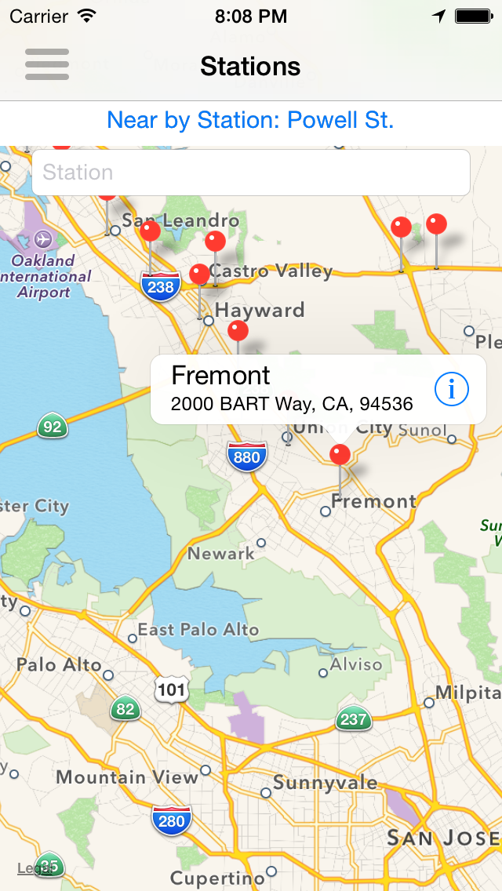 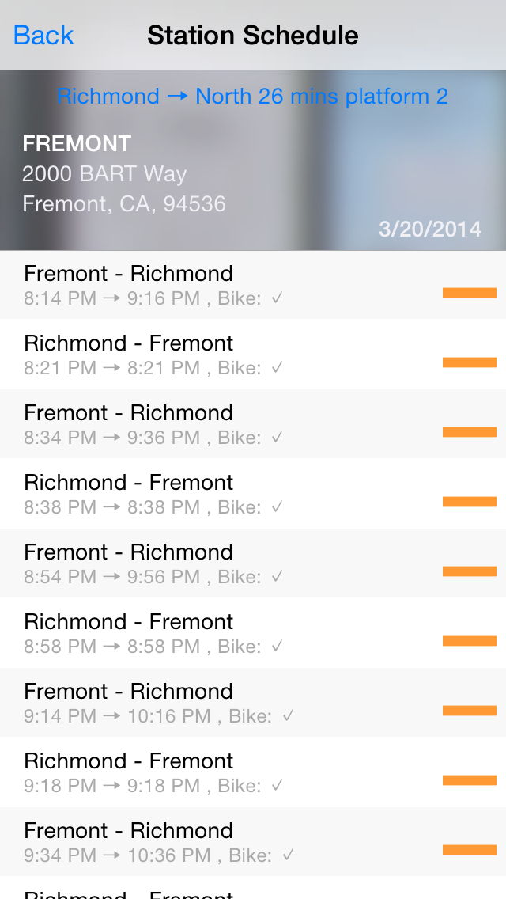 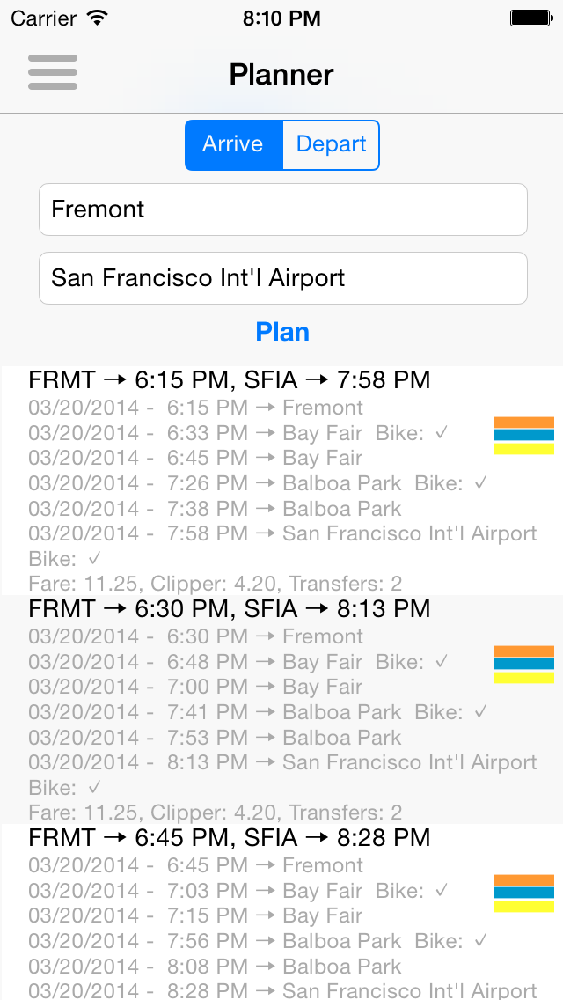 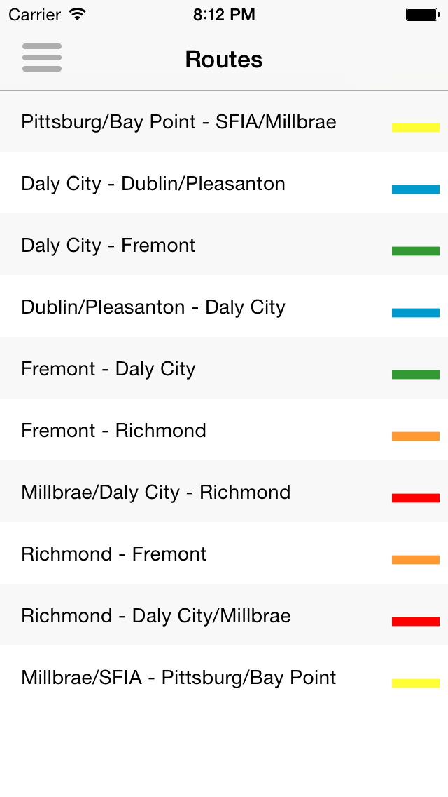
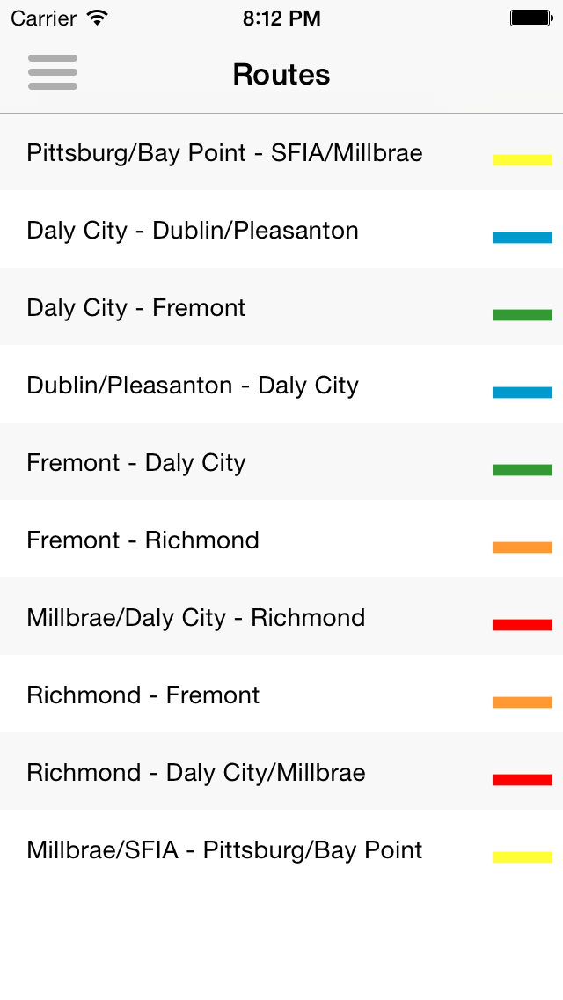
Krazy Chefs
Mobile app for iOS and Android devices that allows users to browse and submit their own recipes. The app allows users to browse recipes by tags, top users, and other categories, and search for recipes by recipe name, tags, and users. Users can also favorite recipes for easy reference and share recipes with friends and family.

 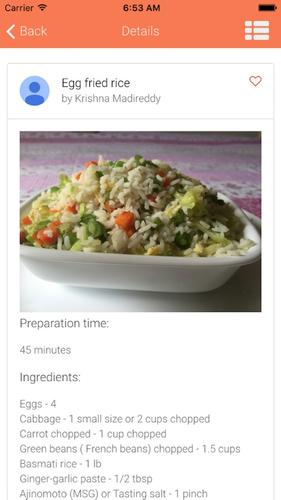
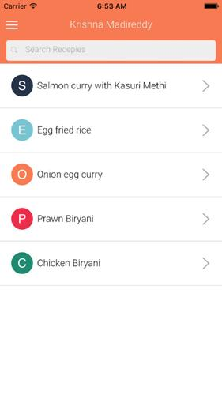
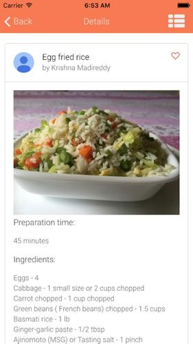
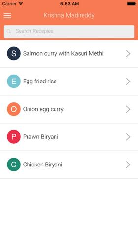

Krazy Chefs Web
Web app that allows users to browse and submit their own recipes. The app allows users to browse recipes by tags, top users, and other categories, and search for recipes by recipe name, tags, and users. Users can also favorite recipes for easy reference and share recipes with friends and family.


Snap Code
SnapCode is a simple barcode scanner used to scan most of the code formats like UPCECode, Code39Code, Code39Mod43Code,EAN13Code, EAN8Code, Code93Code, Code128Code,PDF417Code, QRCode and AztecCodes. Features: Scan and save codes from anywhere. Search for scanned code(s). Copy or Email or Message scanned code(s). Maintain history of scanned code(s). Clear individual or All scanned code(s). Share scanned codes with others.
 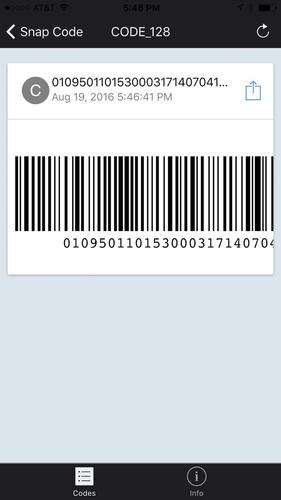
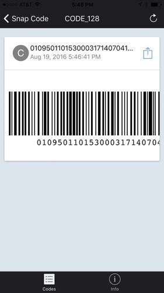
 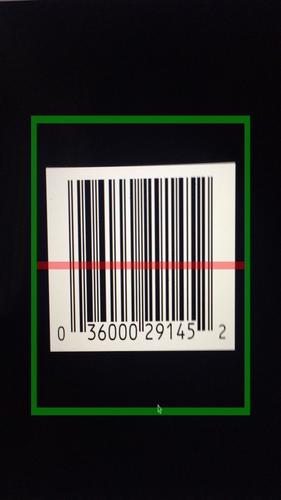
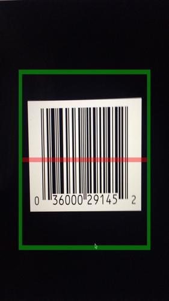

Travel Ready
Travel checklist app that helps users plan and organize their trips by creating and maintaining lists of items needed for specific types of travel. The app has been redesigned to be user-friendly and easy to use, and allows users to create their own lists or use pre-populated lists for specific types of travel. The app also includes features such as the ability to set up reminders to track action items, track the percentage progress of action items, and customize lists by adding, editing, and deleting items.
 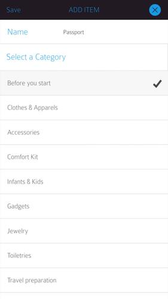
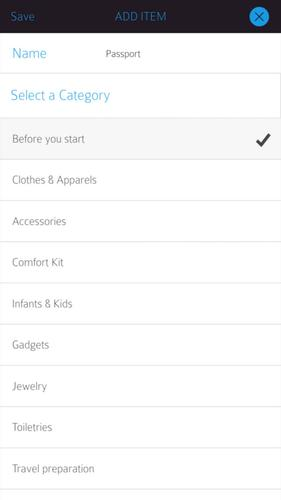

Acomplist
Acomplist is a multi-list app that helps users plan, track, and organize their activities. It allows users to create and manage their own lists or use pre-defined lists, customize lists by adding their own items, and track the progress of their lists using a pie chart. The app is designed to be easy to use and helps users stay well-planned and organized, and provides information on what they need to get started with activities using the pre-defined lists. It is designed to help users accomplish items on their lists with ease and avoid feeling sorry for forgetfulness.

 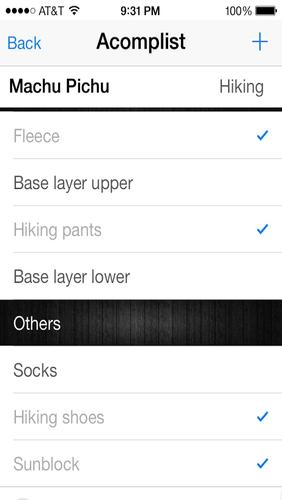
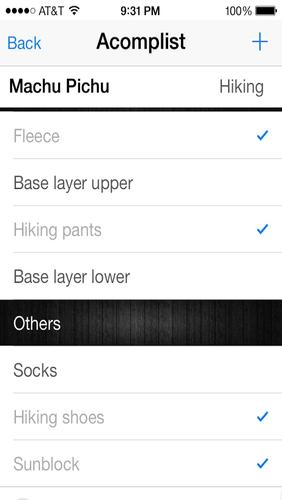
Immi Hub
App that helps users track the status of cases filed with the United States Citizenship and Immigration Services (USCIS). The app is designed for students, attorneys, and employees, and allows users to track the status of different types of receipts. It also includes features such as the ability to add multiple receipts, set up reminders, search by name or receipt number, and share information.


Bump Monitor
Bump monitor is a pregnancy tracking app that helps expectant mothers track their pregnancy vitals, such as blood pressure, weight, fundal height, and baby's heart rate, along with the pregnancy timeline. It also includes a kick counter to help expectant mothers keep track of the baby's movements. The app is user-friendly and helps expectant mothers stay informed about their pregnancy progress.
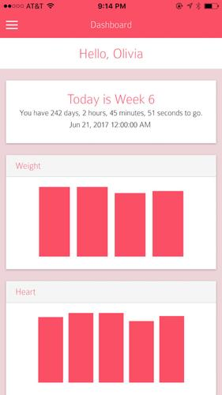 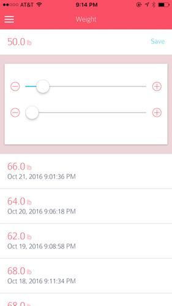
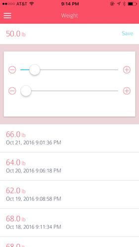


MMTS Rider
A mobile app that helps users plan their trips using the Multimodal Transport System (MMTS) in India. The app allows users to look up information about MMTS stations, trains, schedules, and routes, and includes features such as the ability to mark frequently used stations, trains, or trips as favorites for quick access, search for stations and trains, plan trips between stations, and view a map of the MMTS network. The app also works offline and provides information about arrival and departure schedules at suburban stations.
 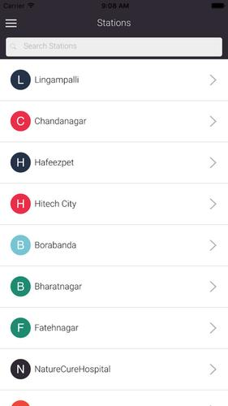
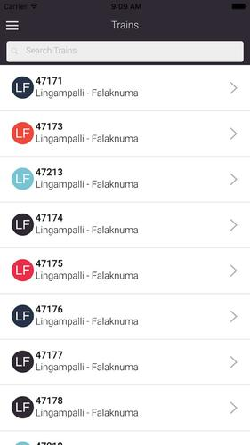
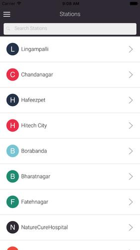
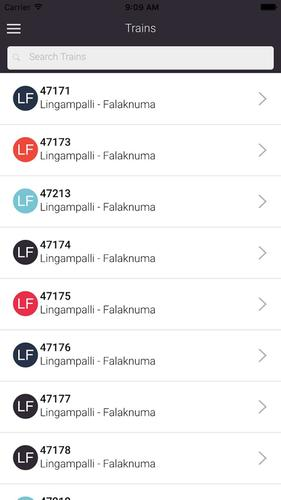

Ever List
EverList is a list management app that helps users plan and track their lists. It provides users with pre-defined lists for specific activities, such as camping and hiking, and allows users to customize these lists to meet their needs. The app also includes features such as the ability to track progress and set up reminders to stay on top of pending tasks. It is designed to be a central place for users to plan and manage their lists, and helps users stay organized and accomplish their tasks effectively.


 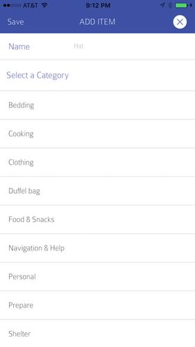
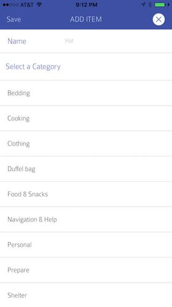
Holiday Ready
HolidayReady is an app that helps users plan and track their holiday gift-giving. It offers a traditional looking holiday checklist that is simple and user-friendly, and provides users with basic categories of people they may want to gift during the holiday season. The app also allows users to create customized lists that can be used for any holiday, and includes features such as the ability to add or delete items from the defined categories, track progress using the dashboard, and reset the list for future holidays. The app is designed to help users save time and avoid forgetting people they want to gift by providing an elegant and easy-to-use interface for checking items off their shopping list.

 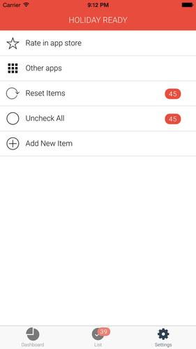
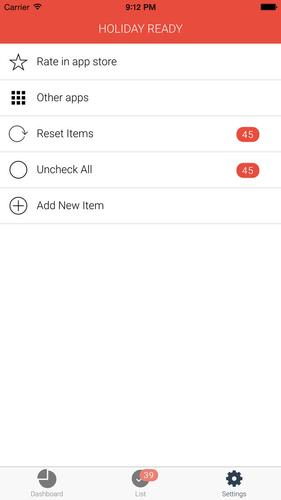
Vista Chrome Etension
Browser extension that adds a new tab page to the user's browser. The new tab page
includes a dashboard
with multiple widgets, including a task list, a timer, personal images and inspiration,
and settings to
personalize the dashboard. The extension is designed to be simple and easy to use, and
allows users to
customize their new tab page with their own images, notes, task lists, and inspiration.
https://chrome.google.com/webstore/detail/vista/pdledafofoakedoelkiegelmodadccnh?hl=en
 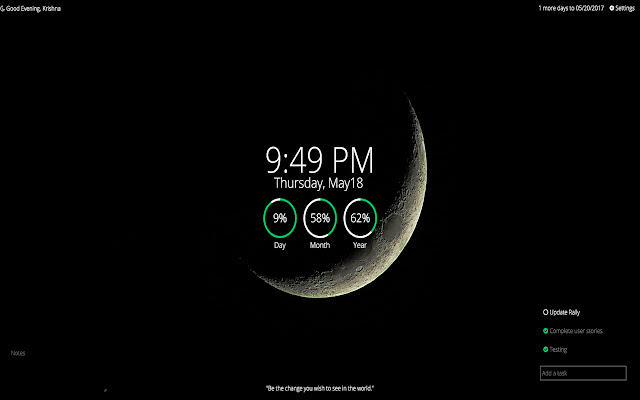
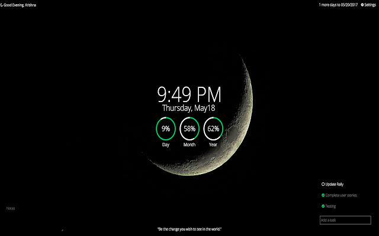
SMS Lessons
SMS Lessons is a platform that enables students to learn over their mobile phones through the receipt of lessons and reading materials, the ability to take quizzes on their phones, and the option to listen to lessons in small packages by calling a particular number. The platform allows different teachers to contribute content and includes features such as the ability to create content for distribution, create a question bank for quizzing students, create subscription packages, convert content to voice for students to listen to, and allow students to ask questions and receive answers from the SMS Lessons staff. The platform also integrates with an SMS gateway and offers subscription options through SMS and direct payment to the account.
VCA - Hospital Management
Interfaced with business and offshore teams for project delivery Developed UI frameworks for broader use across several applications Involved in the design and architecture development of the application used to manage the network hospitals offering medical services for pets. Developed frameworks to enable easy implementation of search screens across different modules of the web application. Designed and developed the interface for rendering web pages across various transaction flows of the hospital management application. Developed framework for synchronizing transactions between regional and corporate Databases. Performed Unit, Integration and System testing.
BidRx.com
Design and development of reporting module for online bidding system. Development of the business logic and interface for auctioning system.
Documiner
The problem that Documiner aims to address is the difficulty in searching through
text-based documents
that are scanned or in image format. This can be a time-consuming and tedious task,
especially if the
documents are long or there are many of them.
Documiner is a python-based service that can extract files of any format from a
configured box folder and
process them using AWS Textract. Textract is a machine learning service that can extract
text and data
from a variety of document types, including scanned documents and images.
The service is accompanied by a simple desktop app that allows users to search for a
particular text
or clause within the extracted documents. The app would allow users to view the files,
search for a
specific text or clause within single or multiple files, and drill down to a particular
page within a
file. The app would also have the ability to highlight the searched content within the
document.
This solution would provide a number of benefits. It would improve automation and
productivity by
streamlining the process of searching through text-based documents. It would also be
reusable for a
variety of use cases, such as job scans, invoices, contracts, and technical documents.
Additionally, it
is cost-effective and provide a more efficient way to search through large numbers of
documents.
Auto Entry
Auto Entry is a touchless entry system designed to streamline the process of entering GE premises. It utilizes a combination of QR code recognition, facial recognition, and profile validation to allow for self-declaration and form submission. The system also has the ability to generate forms and capture digital signatures, as well as manage user access and create dynamic rules for registration. Additionally, it provides an entry dashboard with reports on the use of the system.
Ping Back
A Service that allows interaction with users through a conversational service such as Twilio. It processes messages, logs data to a DynamoDB database, and responds back to the user. This function can be used to create workflows with intents, slots, and actions, and can interact with multiple devices and apps. It aims to improve automation and productivity, and can be reused for a variety of use cases. Its use of a serverless, pay-per-use model makes it a cost-effective solution.